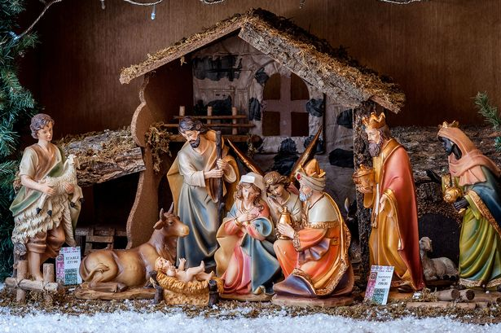
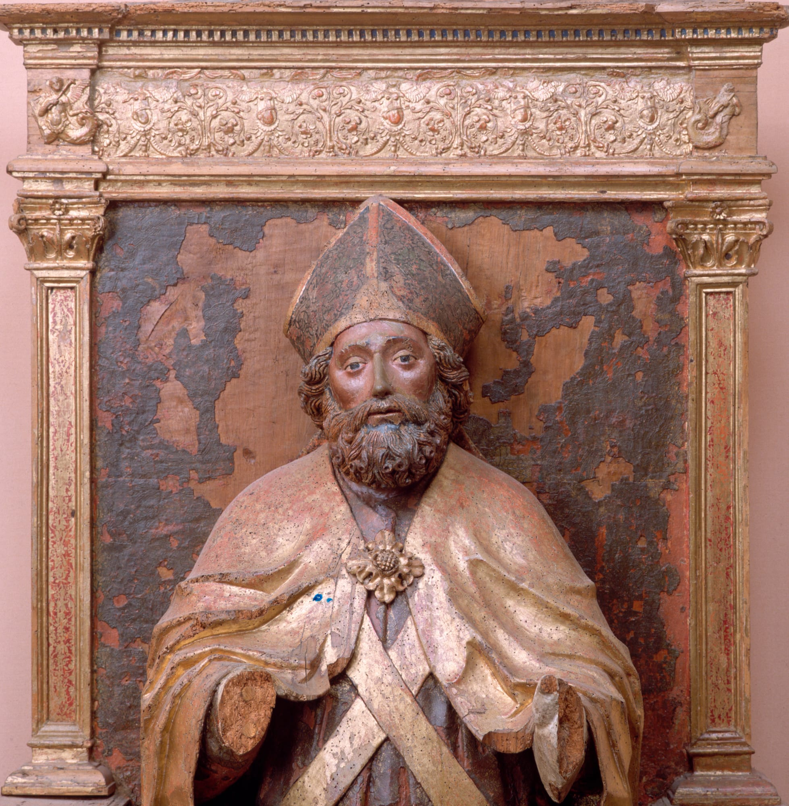

Chrismas is Comming
History of Chrismas
Christmas has its roots in both pagan and Roman civilizations. In the month of December, the Romans observed two festivals. The first was Saturnalia, a two-week festival celebrating their agricultural deity Saturn. They celebrated the birth of Mithra, their sun deity, on December 25th. Both festivities were wild, drunken bashes.
Also in December, on the darkest day of the year, pagan tribes lighted bonfires and torches to ward against the darkness. The Romans adopted this custom for their own feasts.
As Christianity spread throughout Europe, Christian clergy were unable to put a stop to pagan customs and celebrations. Because no one knew when Jesus was born, they adapted a pagan ritual into a celebration of His birthday.
Chrismas is Comming in Finland
The oldest and most popular Christmas market in the city is located on Senate Square. The Helsinki Cathedral, built by Carl Ludwig Engel and finished in 1852, overlooks the scene, and the freshly crowned St. Lucia climbs the cathedral's stairs on December 13th. It's a Christmas ritual that honors the 4th-century Christian martyr, and it's a significant and symbolic event for Finns that should be witnessed.
Aside from the St. Lucia procession, the Helsinki Christmas Market features over a hundred stalls selling a diverse range of handcrafted gifts and Christmas ornaments, as well as locally grown fruit, fish, meat, and cooked delicacies. Santa Claus makes daily appearances, and an old-fashioned merry-go-round revolves in the square's center, providing free rides for youngsters and a nostalgic dose for adults.
The Legend of St. Nicholas: The Real Santa Claus
The tradition of Santa Claus may be traced back hundreds of years to a monk named St. Nicholas. Nicholas is said to have been born about the year 280 A.D. at Patara, near Myra in modern-day Turkey. St. Nicholas, who was widely loved for his devotion and charity, became the focus of countless stories. He is supposed to have given away all of his inherited money and traversed the countryside assisting the needy and ill. One of the most well-known St. Nicholas legends is about how he protected three impoverished sisters from being sold into slavery or prostitution by their father by supplying them with a dowry so that they might marry.
Nicholas' popularity grew throughout time, and he became recognized as the guardian of children and mariners. His feast day is commemorated on December 6, the anniversary of his death. This was previously thought to be a fortunate day for making significant purchases or getting married. St. Nicholas was Europe's most popular saint by the Renaissance. Even during the Protestant Reformation, when saint devotion was prohibited, St. Nicholas had a favourable reputation, particularly in Holland.
Writting email for santa
Sending a letter to Santa is a great way to express your Christmas wishes or just say hi! Here’s his address, so you can send a letter or even visit him in person.
As the days get shorter, and the holidays begin lining up like toy soldiers, there’s a question that we hear more than once. “How can I write a letter to Santa Claus?” You don’t need any help with the content, you just want to know: where do I mail my letter so Santa is sure to get it?
If you want to mail him a letter, send it to:
Santa Claus
Main Post Office
Tähtikuja 1
96930 Arctic Circle
Finland
OR if you want to come to visit Santa House so it possible.
I. Content
II. Write Email for Santa

If you want to send email for santa without come to postal post. Please send online !!!